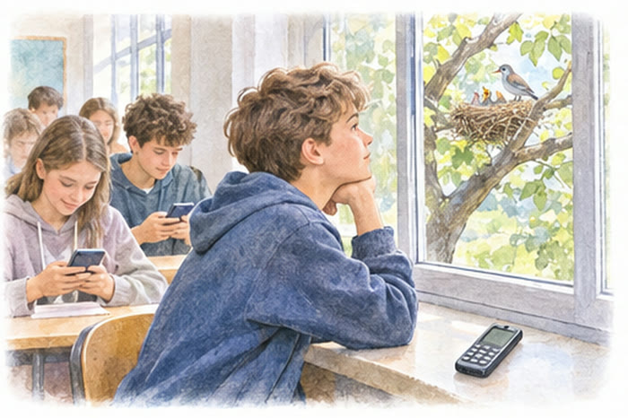

Listen to the text
Speed:

Our class teacher offered us a challenge: twenty-four hours without a smartphone. Eleven students agreed. I was one of them. Here is my diary. 7.00. My alarm didn't ring, because my alarm is my phone. Mum woke me up. First lesson learned: I need a real clock. 7.40. At the bus stop I didn't know when the bus was coming. I asked an old man. He knew the timetable by heart. We talked about the weather. It was not bad. 9.15. During the break everybody was looking at a screen. I had nothing to look at, so I looked out of the window. There is a nest on the tree near the gym. I have studied here for eight years and never noticed it. 12.30. I wanted to take a photo of my lunch. Why? I don't know. I just ate it. 14.00. I couldn't check my homework in the class chat. I called my friend Roman from my mum's old button phone. He was surprised to hear my voice. We talked for twenty minutes instead of sending two messages. 16.30. I felt strange. My hand went to my pocket about fifty times. 18.00. I read forty pages of a book. Without stopping. 21.00. I fell asleep early. Usually I scroll until midnight. The next morning I had two hundred and six messages. Three of them were important. Results: seven of us finished the challenge. We all said the same thing: the first three hours are the hardest. I am not going to throw my smartphone away. It is a great tool. But now I know who is the boss.
Tap any sentence to hear it again.
Сподобалось? На сайті ще більше матеріалів для вчителів!
Reader, презентації, ігри, діагностичні та контрольні роботи до підручників 1-11 класів.
Перейти на сайт materials.allaenglish.com